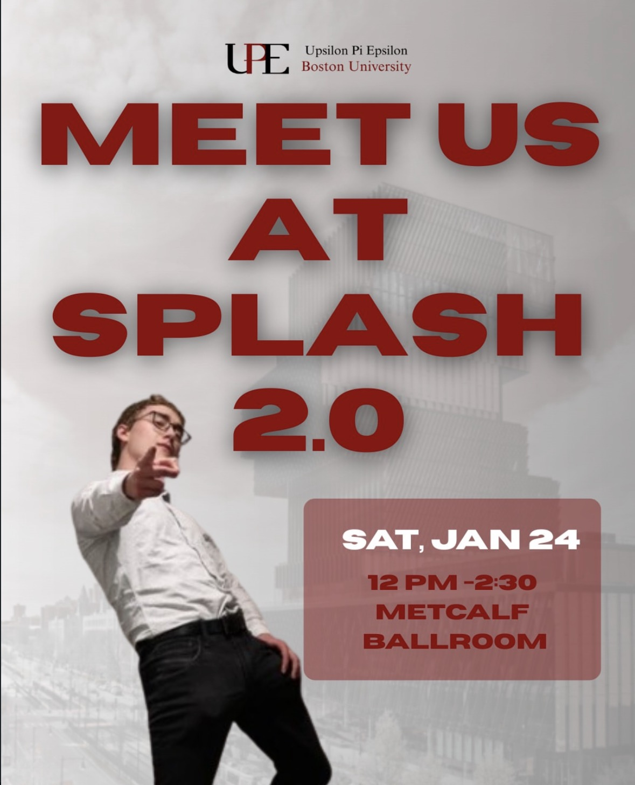
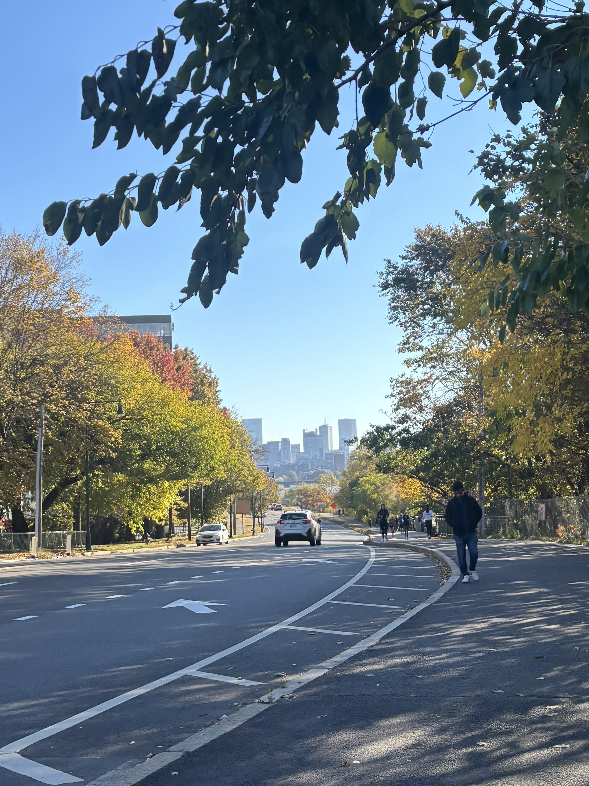

About Me
I'm Luke Duncan, a third-year undergrad at Boston University's Kilachand Honors College majoring in computer science. I'm also working on minors in data science and public policy analysis.
I hope one day to use computer science to aid the development of public transit systems or transit policy in general. For now, I'm figuring out what subfield of CS I'm most interested in. At the moment, I'm very curious about embedded systems. I'm also enjoying learning about the math behind machine learning.
Education
At BU, my coursework has taken on a 75-25 split between STEM and the humanities. Here are some highlights:
- CS350, Fundamentals of Computing Systems, is about analyzing computer systems and predicting their behavior.
- CS365, Foundations of Data Science, covers data science math important to machine learning. Major topics include MLE and the EM algorithm, Markov chains and Metropolis-Hastings, and gradient descent.
- CS460, Introduction to Database Systems, involves concepts related to database management, including query languages such as SQL.
- PO399, Data Science for Politics, covers basic tools of statistical analysis (i.e., linear regression) and how to use them to analyze data in R. The course also teaches about avoiding common pitfalls in reasoning about data (i.e., what it means to select on the dependent variable).
- HC 302, Interdisciplinary Perspectives on Global Challenges – Forced Displacement, covers the systemic nature of global forced displacement. When I took the class, different sections specialized in particular regions. Mine was the U.S.-Mexico border.

Extracurriculars
I've participated in a few clubs/organizations in my time at BU. I'm currently in the Humanities and AI Lab, or HAIL, a partially student-organized group focused on ethical issues brought about by the widespread use of LLM-powered chatbots.
I also participated in UPE, a computing and information disciplines honors society, during my sophomore year. We discussed topics in CS and held a variety of social, academic, and career-focused events. This website started out as a monthlong matriculation project for UPE. The picture on the left is a recruitment poster I was delighted to be pictured on.
During my first semester at BU, I joined the Model UN team. While I never competed, I joined weekly practices and a few mock conferences. I also helped staff our collegiate and high school model UN conferences, BarMUN and BosMUN.

Personal Interests
Outside of academics, I love to run and lift weights! My specific goals & interests shift over time, but I spent this semester working on my mile time, pushing my pace during distance runs, and recovering strength I lost after an injury this summer. I ended up setting personal records for my mile (5:48) and half marathon (1:39:54) this semester, among other distances.
I also speak Spanish and Portuguese. I haven't gotten much practice speaking lately, but I often read and listen to music in those languages to keep from getting too rusty.
I technically play the trumpet, too. I say "technically" because I don't take it out very often anymore. I want to maintain some level of competence so I can join a community band one day.